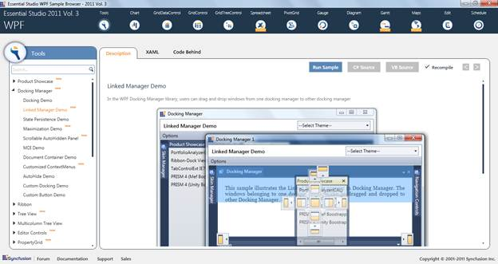

Samples Link
To view samples:
1. Click Start-->All Programs-->Syncfusion-->Essential Studio <version number> -->Dashboard. (Refer section 2.2)
2. In the Dashboard window, click Run Locally Installed Samples for WPF under User Interface Edition panel.

Figure 366: Sample Browser
The WPF Sample Browser window is displayed.